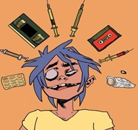
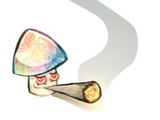

La adiccion no surge de repente, se desarrolla por distintos factores:
Geneticos: Algunas personas tienen mayor predispocision hereditaria (si hay familiares adictos, el riesgo aumenta).
Ambientales: Presion de grupo, familia que normaliza el consumo, falta de supervision parental o vinculo familiar debil..
Inicio temprano: Cuanto mas joven se empieza a consumir, mayor es el riesgo porque el cerebro aun se esta desarrollando.
Transtornos mentales previos:Depresion, ansiedad, TDAH o estres postraumatico hacen que muchas personas usen drogas como ¨automedicacion¨.
.

Mecanismo Cerebral
El consumo repetido cambia el cerebro: altera los circuitos de placer y recompensa (neurotransmisores). Con el tiempo, la persona necesita la droga para sentirse ¨normal¨, no para sentirse bien. Aparece tolerancia (necesitar mas cantidad) y abstinencia (malestar fisico y psicologico para dejarla).
.
Salud fisica: sobredosis y muerte, daño cerebral, problemas cardiacos, pulmonares, hepaticos, daño dental, perdida de peso.
salud mental: depresion, ansiedad, paranoia, psicosis, mayor riesgo de suicidio.
vida personal y social: problemas familiares graves, perdida de trabajo o bajo rendimiento, fracaso escolar, problemas legales, ruina economica.